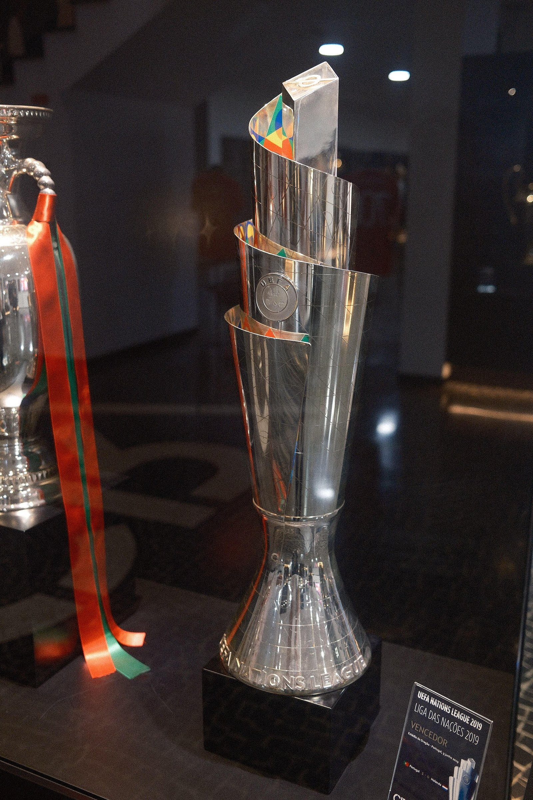
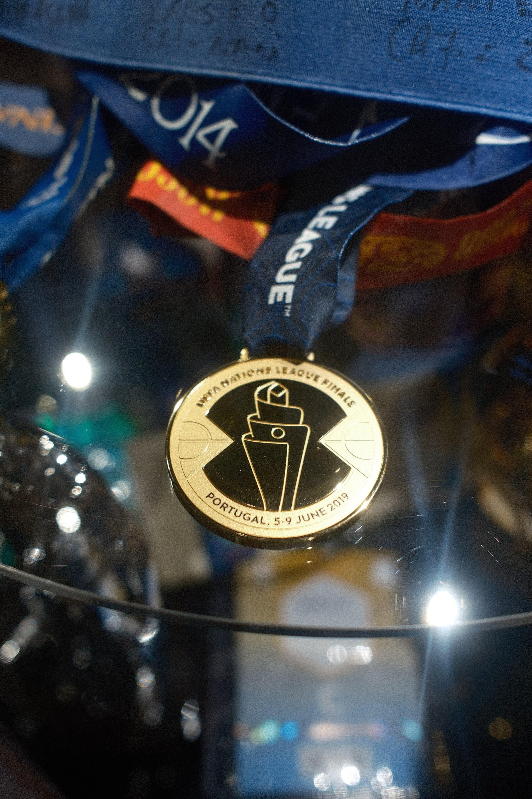

足球：2019 年那场欧国联
我开始看球不算早，2019 年第一届欧国联正好赶上了。半决赛葡萄牙对瑞士，先丢了一个球，结果 C 罗直接帽子戏法，3:1 把比赛翻了过来，那场球看得挺激动。
决赛在波尔图的巨龙球场踢，对手是荷兰，最后 1:0。进球是贡萨洛·格德斯那脚低射，剩下的时间基本上都在紧张。
下面第一张是那届的冠军奖杯，现在放在马德拉的 C 罗博物馆里，展柜的牌子上还写着当年的战绩。后面两张是冠军奖牌和决赛那座球场。



我开始看球不算早，2019 年第一届欧国联正好赶上了。半决赛葡萄牙对瑞士，先丢了一个球，结果 C 罗直接帽子戏法，3:1 把比赛翻了过来，那场球看得挺激动。
决赛在波尔图的巨龙球场踢，对手是荷兰，最后 1:0。进球是贡萨洛·格德斯那脚低射，剩下的时间基本上都在紧张。
下面第一张是那届的冠军奖杯，现在放在马德拉的 C 罗博物馆里，展柜的牌子上还写着当年的战绩。后面两张是冠军奖牌和决赛那座球场。

